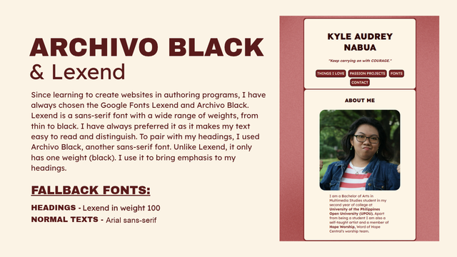
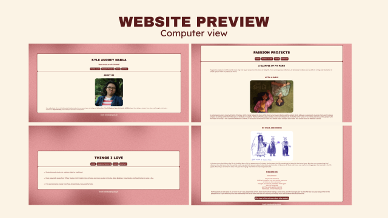
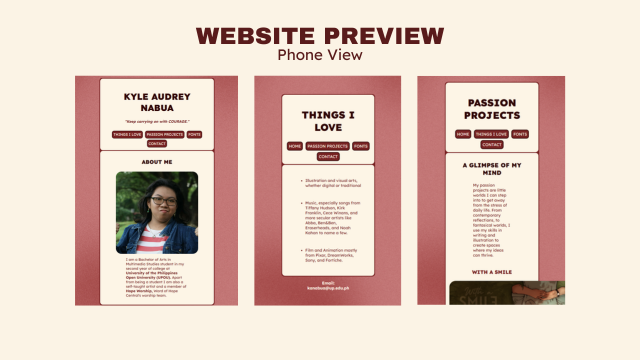
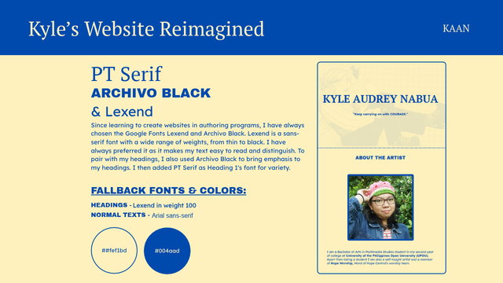
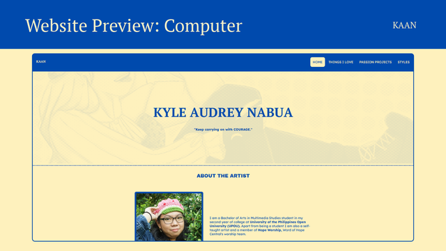
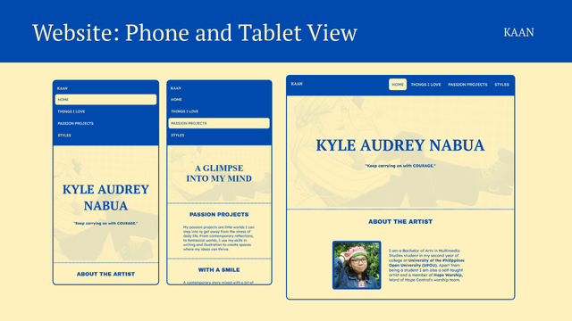

AN ARTIST'S PLIGHT
My page first looked like this



After the final iterations I made for Module 7, I just wasn't satisfied. The colors looked too dull, my images weren't aligning to where I wanted them to be, and it looked basic. This was my first time using CSS and HTML, and I could have left it at that.
But I told myself that "I could do more." So when the final project came up, I went back to the drawing board and started over.
MAKEOVER
I knew that I wanted to add color to my page, but which? Every combination I saw on Pinterest was pretty, and I couldn't choose! SO I decided to put colors aside while I drafted a sketch of my website in Canva. I used blue and light yellow as placeholder colors. But as I edited, it looked more and more appealing to me. By the end of my concepting stage, I decided that it would be my final colors! As a header, I added a monochromatic image of my digital illustration and put it at a low opacity, just so that part wouldn't feel too plain.
For my fonts, I added PT Serif to the mix as a title font. I am usually not a fan of mixing serif with sans-serif, but after seeing my classmates' work, I decided to try it out for myself and... I loved it!



FINAL THOUGHTS
Learning HTML and CSS has been a huge journey for me, from someone with little to no knowledge about programing in general! This was a challenge for me. But I'm so glad I didn't take the easy way out because, by the end of my revisions, I learned from my mistakes and came out a more skilled website builder and designer!